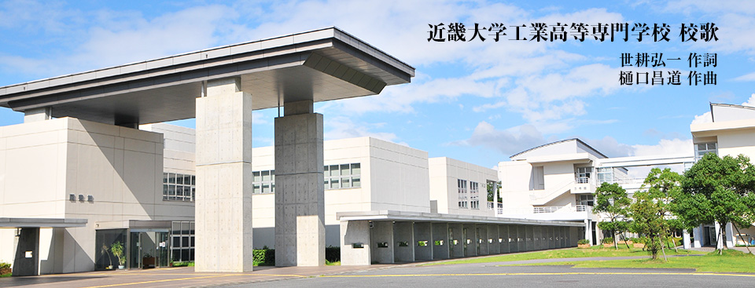

学園章・校歌・沿革
学園章
学園花は、梅、です。 「梅花霜雪を経て開く」。
自然の厳しさをへて、春いちばん、 品格高き花が咲きひらく。
学園章は、梅の花弁を、象徴したものです。五つの花弁は、大学の大、花芯も大。
人そのものでもある。
これは、本大学の現および未来に向かっての
存在と位置をかたどるものです。
一部がやや離れているのは未来志向に基づく
内面の未完、さらに充溢、完熟をめざし向かう形姿。
一本のつよい線に貫かれる。
校歌

はつらつと♪＝108
SemPre Marcato
1
学問技術 あい競い
高き理想を 掲げつつ
世界の文化 うち建てん
若き学徒に 誇りあれ
近畿大学 わが学園 おお高専
学問技術 あい競い
高き理想を 掲げつつ
世界の文化 うち建てん
若き学徒に 誇りあれ
近畿大学 わが学園 おお高専
2
あらし相呼ぶ 熊野灘
七里御浜の 松風に
健児はあげて 気負い立つ
若き学徒に 光あれ
近畿大学 わが学園 おお高専
あらし相呼ぶ 熊野灘
七里御浜の 松風に
健児はあげて 気負い立つ
若き学徒に 光あれ
近畿大学 わが学園 おお高専
3
国のしずめの 鬼が城
剛気の気象 胸にしめ
校章梅に 相寄れる
若き学徒に 栄あれ
近畿大学 わが学園 おお高専
国のしずめの 鬼が城
剛気の気象 胸にしめ
校章梅に 相寄れる
若き学徒に 栄あれ
近畿大学 わが学園 おお高専
沿革
| 昭和37年 2月10日 | 学校法人近畿大学の併設校として、熊野高等専門学校(機械工学科、電気工学科)設置認可
住所：三重県熊野市有馬町2800 |
||||||||
|---|---|---|---|---|---|---|---|---|---|
| 昭和37年 9月23日 | 校舎竣工式 | ||||||||
| 昭和37年12月15日 | 土木工学科 設置認可 | ||||||||
| 昭和42年 3月 １日 | 熊野高等専門学校を熊野工業高等専門学校に名称変更 | ||||||||
| 昭和42年 3月10日 | 第１回 卒業式 (機械工学科、電気工学科) | ||||||||
| 昭和60年 4月13日 | 情報処理教育センター竣工 | ||||||||
| 平成12年 4月 1日 | 学校名変更
|
||||||||
| 平成12年 4月 1日 | 学科名変更
|
||||||||
| 平成16年 3月30日 | 新校舎竣工式 | ||||||||
| 平成17年 4月 1日 | 学科を統合し、総合システム工学科を設置
[機械システムコース、電子電子コース、情報コミュニケーションコース、都市環境コース] |
||||||||
| 平成17年 4月 1日 | 専攻科設置[生産システム工学専攻(機械工学,電気電子工学,土木工学)]
準学士課程(5年)+専攻科(2年)で、学位授与機構の審査を経て、学士の学位取得が可能になりました。 |
||||||||
| 平成23年 4月 1日 | 三重県名張市へ移転 4号館竣工 |
||||||||
| 平成27年 4月 1日 | コース名変更
|
||||||||
| 平成30年 3月29日 | 武道館竣工式 | ||||||||
| 令和3年11月13日 | 名張市移転10周年・創立60周年式典 |